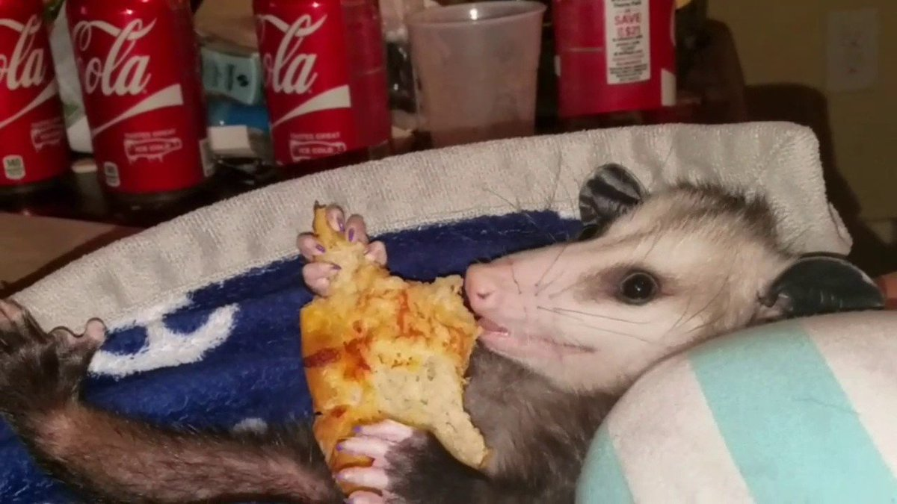

Katter

Katter är vanligtvis husdjur och är kända för sin mjuka päls, eleganta rörelser och självständiga personlighet. De är också skickliga jägare och kan vara mycket sociala med sina ägare.
Katter finns i olika raser och färger, och varje katt har sin egen unika personlighet. De är ofta mycket lekfulla och kan tillbringa timmar med att jaga leksaker eller titta ut genom fönstret på omvärlden.
En annan unik egenskap hos katter är deras förmåga att ta hand om sig själva. De är kända för att vara rena djur och tillbringar mycket tid med att tvätta sig själva.
Katter har också visat sig ha positiva hälsoeffekter på människor, inklusive att minska stressnivåerna och förbättra den mentala hälsan.
Sammanfattningsvis är katter underbara husdjur som är älskade av miljontals människor runt om i världen. De är intelligenta, lekfulla och oberoende djur som kan förbättra människors liv på många sätt.
Pungråttor

Pungråttor är små däggdjur som tillhör gruppen pungdjur. De finns främst i Australien, Nya Guinea och omkringliggande öar. Pungråttor är kända för sin karaktäristiska pung, där honorna bär sina ungar tills de är redo att klara sig själva.
Pungråttor varierar i storlek och utseende beroende på art, men de har vanligtvis mjuk päls och lång svans. De är också nattaktiva och äter vanligtvis insekter, frukt och nötter.
En av de mest kända pungråttorna är kängururåttan, som liknar en liten känguru med sin hoppgång och bakben. Andra exempel på pungråttor inkluderar pungmöss, pungvesslor och punghästar.
Även om pungråttor är små och söta, är de faktiskt mycket intelligenta och anpassningsbara djur. De har överlevt i tusentals år genom att anpassa sig till olika miljöer och föda. Dessutom har vissa pungråttor utvecklat ovanliga försvarsmekanismer, som att avge en stark lukt eller skrika högt för att skrämma bort rovdjur.
Tyvärr hotas många pungråttor av förlust av levnadsmiljö och jakt. Många arter har blivit utrotade eller hotas av utrotning på grund av människans påverkan på deras livsmiljöer. Det är viktigt att skydda pungråttor och deras livsmiljöer för att säkerställa deras överlevnad för framtida generationer att beundra och uppskatta.